Next: Bounded Cavities
Up: Cavities with Bounded Sections
Previous: Conclusions
Contents
Two theorems on fully developed flow
Theorem 2 (Unidirectionality of fully developed
flow)
Let

be a regular stationary solution of the
incompressible Navier-Stokes equations with a purely vertical body
force. If
vanishes on the boundary of a vertically
prismatic domain and has zero vertical gradient then
is
purely vertical.
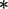
Proof:
Since
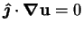, the equation of continuity reduces
to
and the horizontal components of the equation of motion are
where  is the Reynolds number.
is the Reynolds number.
The remnant of the equation of continuity
(7.86) implies the existence of a scalar
function,  (see Lamb 1932, pp. 62-3 for a construction) such that
(see Lamb 1932, pp. 62-3 for a construction) such that
| 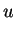 |
 |
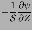 |
(7.88) |
| 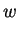 |
|
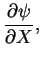 |
(7.89) |
so that the horizontal momentum problem becomes
subject to
 |
(7.91) |
where
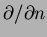 is the outward normal derivative. On multiplying
(7.90) through by  , an arbitrary function also satisfying
the boundary conditions (7.91), and integrating over the section, the
variational form is obtained (Girault & Raviart 1979, p. 120):
, an arbitrary function also satisfying
the boundary conditions (7.91), and integrating over the section, the
variational form is obtained (Girault & Raviart 1979, p. 120):
If is then set equal to , the integrand on the left
hand side vanishes and the equation reduces to
which is only possible if
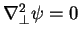. With the
boundary conditions (7.91), and the well-known uniqueness
of harmonic functions in bounded domains
(Lamb 1932, pp. 41, 64), we have
 throughout
throughout  and so 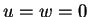, uniquely.
and so 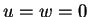, uniquely.

Note:
The horizontal components of velocity satisfy a
two-dimensional Navier-Stokes problem with no body force and homogeneous
boundary conditions. The volume integral (7.93) is proportional
to the net rate of viscous dissipation of energy by this horizontal flow
per unit length in the vertical direction (Lamb 1932, p. 580).
Since, under the hypothesis
, the only available
source for this power is the kinetic energy of the fluid, any existing
horizontal motion would have to continually diminish in magnitude; thus, the
entire proof is similar to that of the uniqueness of creeping flows
with prescribed boundary velocities (Lamb 1932, pp. 617-8; Rayleigh 1913),
even though the inertial terms of the equation of motion
were not neglected here.
Theorem 3 (Vortex-lines in fully developed flow)
If a flow has
zero gradient in some direction, the component of velocity
in this direction is constant along vortex-lines.
Proof:
The hypothesis may be written
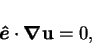
where  is a unit vector.
Adding three terms (the first and third of which are identically zero due to
the uniformity of
is a unit vector.
Adding three terms (the first and third of which are identically zero due to
the uniformity of  )
to each side of the hypothesis and forming the scalar product
with the vorticity gives
)
to each side of the hypothesis and forming the scalar product
with the vorticity gives
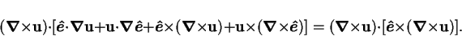
The triple scalar product on the right hand side vanishes, while the term in
brackets on the left hand side is simply
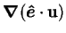; thus,
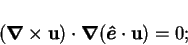
i.e. the component of velocity in the direction of zero gradient is constant
along vortex-lines.
Note:
The hypothesis of the theorem includes all
two-dimensional flows and all unidirectional solenoidal flows.
The theorem is entirely kinematical;
the only restriction placed on the velocity field is differentiability.
Next: Bounded Cavities
Up: Cavities with Bounded Sections
Previous: Conclusions
Contents
Geordie McBain
2001-01-27